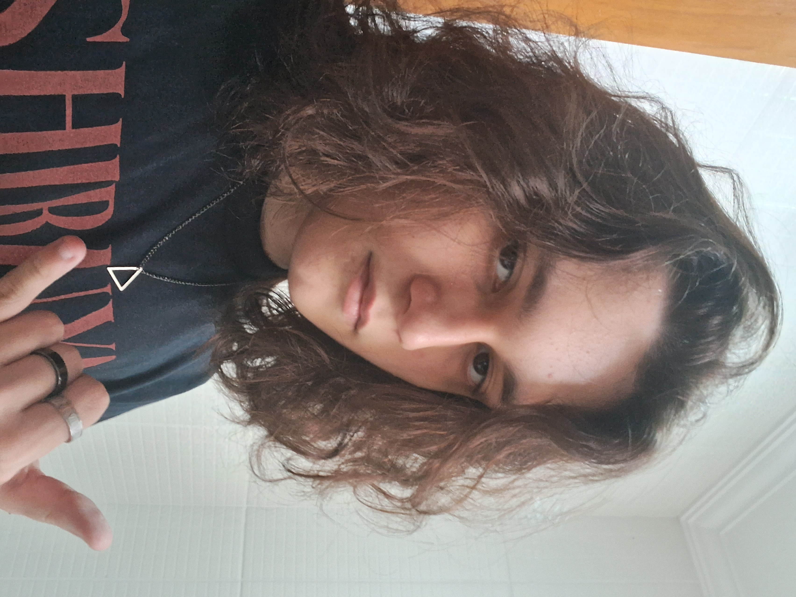

Olá sou Ruan Vitor Martins esse é esse é o meu portfólio
Um pouco sobre mim, eu nasci em Joinville SC no ano de 2006 e vivo aqui até hoje. eu estudei desde 1° ao 9° ano na mesma escola pública, e lá eu fiz vários amigos que estão comigo até hoje. do 1° ao 6° ano eu era bem energético e extrovertido o que mudou bastante do 6° ano pra cima por causa da morte do meu pai que impactou muito a minha vida, me deixando mais recluso, tímido e depressivo na época. Nos meus 12 anos eu comecei a fazer alguns cursos como inglês que faço até hoje e de computador que larguei por o curso não ser muito bom, mas hoje tenho interesse de começar outro.